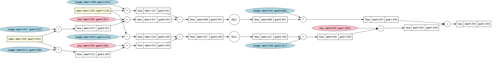

MicroGrad: A Tiny Autodiff Engine
An educational project showcasing the principles of automatic differentiation for neural networks. Build and train simple networks with just a few lines of Python!
Project Overview
MicroGrad is a minimalistic automatic differentiation engine designed to demonstrate the core principles behind reverse-mode differentiation (backpropagation) in neural networks. With just a few lines of Python code, MicroGrad lets you build a computation graph dynamically and perform gradient-based optimization steps. This makes it an ideal educational tool for anyone looking to understand the low-level mechanics of deep learning frameworks.
Key Features
- Dynamic Computation Graph: Every arithmetic operation on
Valueobjects automatically builds a directed acyclic graph (DAG). This graph captures both the forward pass values and references to parent nodes for backpropagation. - Reverse-Mode Differentiation: A single
backward()call on the output node traverses the graph in reverse to compute gradients for each node using the chain rule. This is exactly how modern deep learning frameworks calculate derivatives. - Minimal, Extensible API: The core library is intentionally small and easy to read, allowing users to quickly understand and extend it. Adding custom operations, activations, or neural layers is straightforward.
- Neural Network Components: MicroGrad includes
Neuron,Layer, andMLPclasses, showcasing how to build and train simple neural networks (e.g., feed-forward networks) using its automatic differentiation engine. - Educational Focus: The code is designed with clarity in mind, making it suitable for learning, experimentation, or prototyping new ideas without the overhead of a large framework.
- Enhanced Visual Clarity: Added label and color coding to the
Valueclass to visually clarify data flow and computations, making it easier to grasp gradient logic and backpropagation.
Technologies Used
- Python: Core logic and scripting.
- GraphViz: Visualizing the computation graph in a user-friendly way.
(Note: The simplest MicroGrad setups only rely on standard Python libraries. Optional tools enhance functionality or visualization.)
Challenges & Learnings
- Efficient Graph Construction: Balancing simplicity and clarity while building a flexible graph structure required careful design to keep the codebase minimal yet powerful.
- Backpropagation Mechanics: Ensuring correct gradient flow through each arithmetic operation (e.g., +, *, pow, relu) demanded a precise implementation of partial derivatives.
- Debugging & Visualization: Introducing GraphViz for graph rendering helped debug complex networks by clearly showing how values and operations connect.
- Scalability Trade-Off: While MicroGrad is primarily for small-scale experiments and educational purposes, implementing advanced optimizations (like vectorization or GPU support) can be non-trivial.
- Extensibility: Keeping the codebase lean sometimes means users must add features themselves—like additional activation functions or more sophisticated layers—promoting deeper understanding but requiring extra effort.
- Visual Enhancements: Implementing and integrating color coding and labels into the
Valueclass for improved visual understanding of the backpropagation process.
Inspiration and Adaptation
This project is heavily inspired by Andrej Karpathy's excellent video tutorial on implementing a micrograd engine from scratch. My adaptation adds visual cues like explicit Type labels and Color coding to the core Value class.
Screenshots
Illustrative examples:
Computation Graph: A GraphViz visualization showing inputs, parameters, and operations leading to an output node.
Neuron/Layers: A small neural network diagram built from Neuron and Layer classes, highlighting parameter flows.
Source Code
You can view and contribute to the source code on GitHub:
Source Code